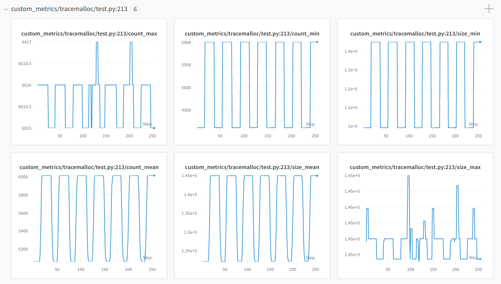

如何为 RLlib 做出贡献
Contents
如何为 RLlib 做出贡献#
Development Install#
You can develop RLlib locally without needing to compile Ray by using the setup-dev.py script.
This sets up symlinks between the ray/rllib dir in your local git clone and the respective directory bundled with the pip-installed ray package. This way, every change you make in the source files in your local git clone will immediately be reflected in your installed ray as well.
However if you have installed ray from source using these instructions then do not use this, as these steps should have already created this symlink.
When using this script, make sure that your git branch is in sync with the installed Ray binaries (i.e., you are up-to-date on master and have the latest wheel installed.)
# Clone your fork onto your local machine, e.g.:
git clone https://github.com/[your username]/ray.git
cd ray
# Only enter 'Y' at the first question on linking RLlib.
# This leads to the most stable behavior and you won't have to re-install ray as often.
# If you anticipate making changes to e.g. tune quite often, consider also symlinking ray tune here
# (say 'Y' when asked by the script about creating the tune symlink).
python python/ray/setup-dev.py
API Stability#
Objects and methods annotated with @PublicAPI, @DeveloperAPI, or @ExperimentalAPI
have the following API compatibility guarantees:
Features#
Feature development, discussion, and upcoming priorities are tracked on the GitHub issues page (note that this may not include all development efforts).
Benchmarks#
A number of training run results are available in the rl-experiments repo, and there is also a list of working hyperparameter configurations in tuned_examples, sorted by algorithm. Benchmark results are extremely valuable to the community, so if you happen to have results that may be of interest, consider making a pull request to either repo.
Contributing Algorithms#
These are the guidelines for merging new algorithms (rllib/algorithms) into RLlib:
- Contributed algorithms:
must subclass Algorithm and implement the
step()methodmust include a lightweight test (example) to ensure the algorithm runs
should include tuned hyperparameter examples and documentation
should offer functionality not present in existing algorithms
- Fully integrated algorithms have the following additional requirements:
must fully implement the Algorithm API
must offer substantial new functionality not possible to add to other algorithms
should support custom models and preprocessors
should use RLlib abstractions and support distributed execution
Both integrated and contributed algorithms ship with the ray PyPI package, and are tested as part of Ray’s automated tests. The main difference between contributed and fully integrated algorithms is that the latter will be maintained by the Ray team to a much greater extent with respect to bugs and integration with RLlib features.
How to add an algorithm to rllib/algorithms#
It takes just two changes to add an algorithm to algorithms. A minimal example can be found here.
First, subclass Algorithm and implement the _init and step methods:
@Deprecated(old="rllib/algorithms/random_agent/",
help=ALGO_DEPRECATION_WARNING,
error=False)
class RandomAgent(Algorithm):
"""Algo that produces random actions and never learns."""
@classmethod
@override(Algorithm)
def get_default_config(cls) -> AlgorithmConfig:
config = AlgorithmConfig()
config.rollouts_per_iteration = 10
return config
@override(Algorithm)
def _init(self, config, env_creator):
self.env = env_creator(config["env_config"])
@override(Algorithm)
def step(self):
rewards = []
steps = 0
for _ in range(self.config.rollouts_per_iteration):
self.env.reset()
terminated = truncated = False
reward = 0.0
while not terminated and not truncated:
action = self.env.action_space.sample()
_, rew, terminated, truncated, _ = self.env.step(action)
reward += rew
steps += 1
rewards.append(reward)
return {
"episode_reward_mean": np.mean(rewards),
"timesteps_this_iter": steps,
}
Second, register the algorithm with a name in rllib/algorithms/registry.py.
def _import_random_agent():
from ray.rllib.algorithms.random_agent.random_agent import RandomAgent
return RandomAgent
def _import_random_agent_2():
from ray.rllib.algorithms.random_agent_2.random_agent_2 import RandomAgent2
return RandomAgent2
ALGORITHMS = {
"RandomAgent": _import_random_agent,
"RandomAgent2": _import_random_agent_2,
# ...
}
After registration, you can run and visualize training progress using rllib train:
rllib train --run=RandomAgent --env=CartPole-v1
tensorboard --logdir=~/ray_results
Debugging your Algorithms#
Finding Memory Leaks In Workers#
Keeping the memory usage of long running workers stable can be challenging. The MemoryTrackingCallbacks class can be used to track memory usage of workers.
The objects with the top 20 memory usage in the workers will be added as custom metrics. These can then be monitored using tensorboard or other metrics integrations like Weights and Biases:
Troubleshooting#
If you encounter errors like
blas_thread_init: pthread_create: Resource temporarily unavailable when using many workers,
try setting OMP_NUM_THREADS=1. Similarly, check configured system limits with
ulimit -a for other resource limit errors.
For debugging unexpected hangs or performance problems, you can run ray stack to dump
the stack traces of all Ray workers on the current node, ray timeline to dump
a timeline visualization of tasks to a file, and ray memory to list all object
references in the cluster.
TensorFlow 2.x#
It is now recommended to use framework=tf2 and eager_tracing=True (in case you are developing with TensorFlow) for maximum performance and support. We will however continue to support framework=tf (static-graph) for the foreseeable future.
For debugging purposes, you should use framework=tf2 with eager_tracing=False.
All tf.Tensor values will then be visible and printable when executing your code.
However, some slowdown is to be expected in this config mode.
Older TensorFlow versions#
RLlib supports both TensorFlow 2.x as well as tf.compat.v1 modes.
Always use the ray.rllib.utils.framework.try_import_tf() utility function to import tensorflow.
It returns three values:
tf1: Thetf.compat.v1module or the installed tf1.x package (if the version is < 2.0).tf: The installed tensorflow module as-is.tfv: A version integer, whose value is either 1 or 2.
See here for a detailed example script.